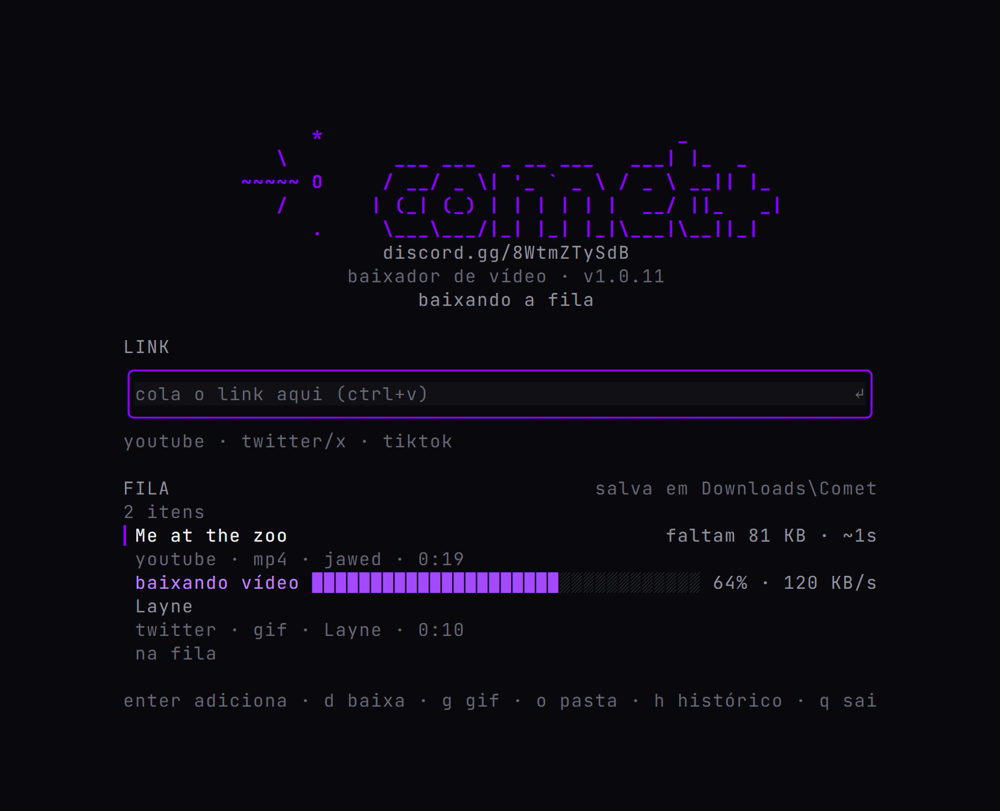

Axolotl BR · ferramenta
Comet.
Baixador de vídeo para Windows, em janela ou no terminal. Cola o link, aperta Enter, pronto. YouTube, Twitter/X e TikTok, com fila, GIF de verdade e MP3.

Como usar
Abre o Comet
Dois cliques no
comet.exeabrem a janela. Quem prefere terminal rodacomet.Cola o link
Ctrl+V e pronto: na janela ele já começa a baixar. Escolhe vídeo, GIF ou MP3 antes.
Acha o arquivo
A barra mostra quanto falta e a velocidade. No fim, mostrar na pasta abre o arquivo marcado.
O que ele baixa
- YouTubevídeo ou MP3
- Twitter/Xvídeo ou GIF
- TikTokvídeo
O GIF do Twitter sai como .gif real, com paleta otimizada pelo ffmpeg, não um mp4 renomeado. Canal e playlist do YouTube ficam de fora: é um vídeo por link.
Teclas do terminal
| Tecla | O que faz |
|---|---|
| Enter | Adiciona o link à fila |
| D | Baixa a fila |
| G | Alterna GIF no item selecionado (Twitter) |
| M | Alterna MP3 no item selecionado |
| O | Abre a pasta com o arquivo já marcado |
| H | Abre o histórico; Enter nele baixa de novo |
| ↑ ↓ | Move a seleção |
| Q Esc | Sai |
Bom saber
Onde o arquivo cai
Na pasta onde o terminal está: cd Downloads e depois comet salva em Downloads. Com duplo clique no exe, vai para Downloads\Comet. O nome fica Comet - <título>.
Primeiro uso
O Comet baixa sozinho o yt-dlp e o ffmpeg para %LOCALAPPDATA%\comet\bin e mostra o progresso na tela. Depois disso, abre direto.
Twitter/X e TikTok
Essas plataformas pedem cookies. O Comet usa os do Chrome, Edge ou Brave instalados na máquina. Post privado ou que pede login não baixa: o Comet não tem login, de propósito.
Aviso do Windows
O exe não é assinado, então o SmartScreen pode avisar na primeira vez. Clica em Mais informações e Executar assim mesmo. O código está todo no GitHub.